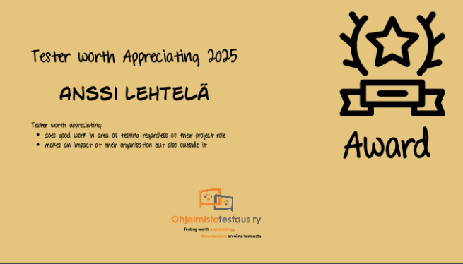

Tester Worth Appreciating 2025
Published: 18.12.2025
Anssi Lehtelä is a professional in continuous quality building, working as an integrated member of a software development team. He can wear many hats: tester, ensemble programmer, and learning facilitation expert.
Anssi has shared his expertise both as an excellent conference and seminar speaker, as well as an active community member. With his particularly distinguished talk on failures, he has entertained and inspired his audience.